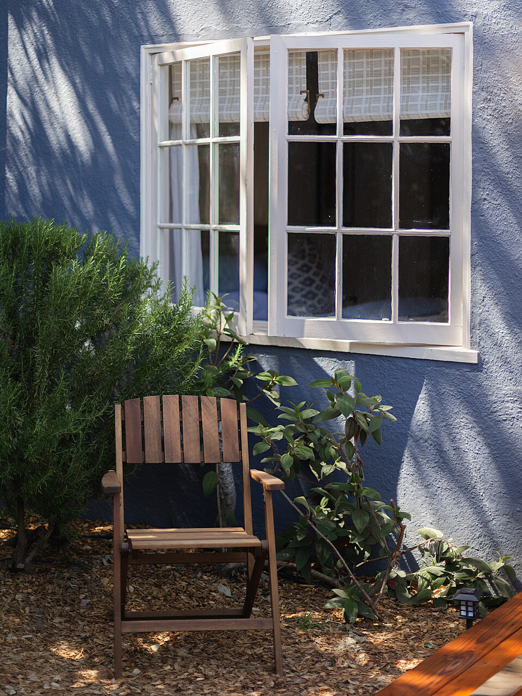
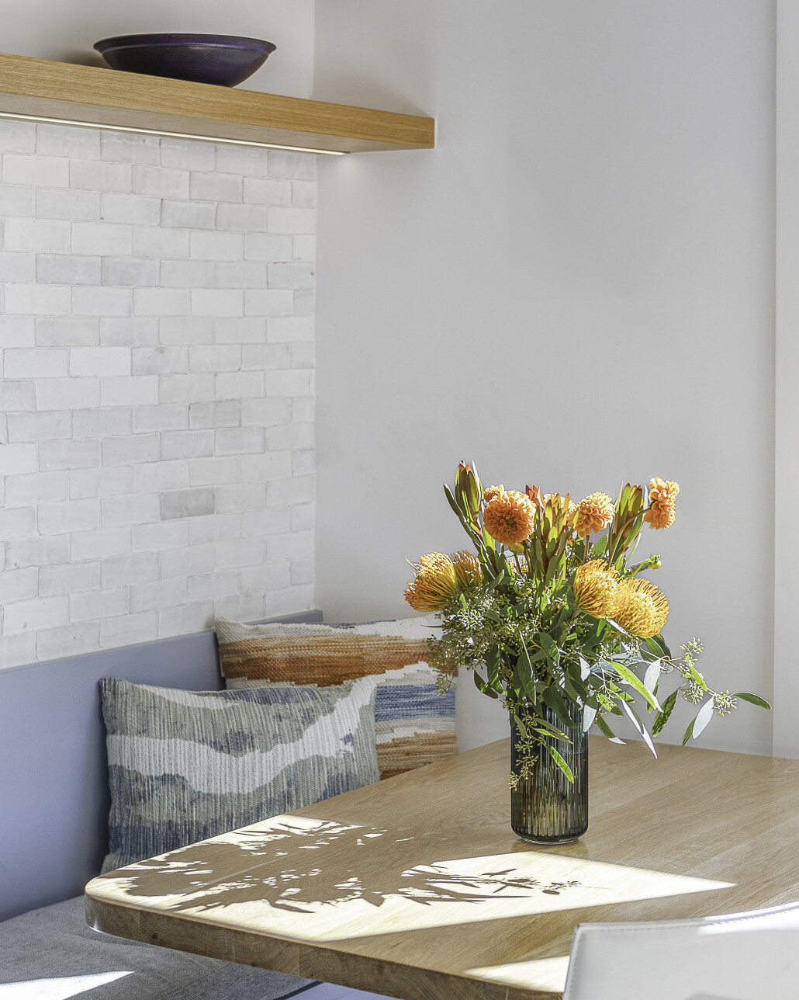

CRISTINA CARRIZOSA
about
portfolio
services
contact
Cristina Carrizosa | Hospitality & Lifestyle Photographer
Professional hospitality and lifestyle photographer based in Richmond, VA. Specializing in boutique hotels, luxury vacation rentals, and interior design photography in San Francisco and internationally.

